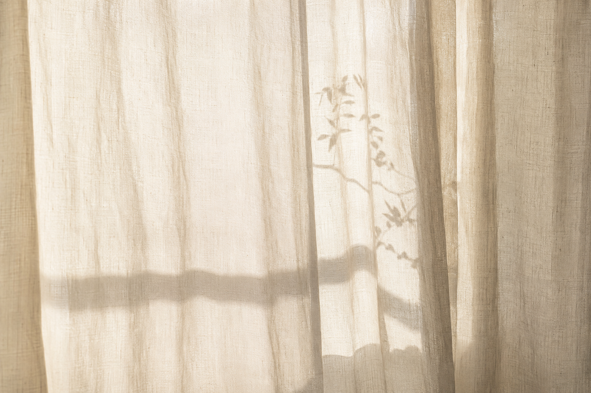
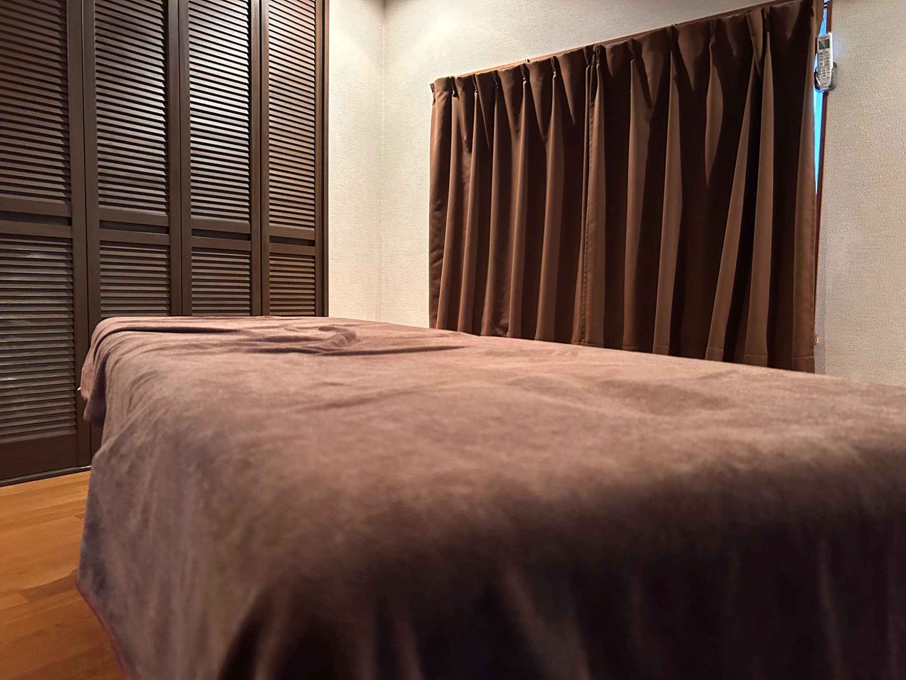

01
痛みを我慢しない
強く揉んだり、痛みを我慢する施術ではありません。

WELCOME TO TOKU
ABOUT HEALSALON TOKU
このページをご覧いただき、
ありがとうございます。
少しだけ、ご紹介させてください。
OUR CARE
「リフレッシュ整体」という考え方です。
01
強く揉んだり、痛みを我慢する施術ではありません。
02
身体が身構えない、静かでやわらかな触れ方を大切に。
03
元の身体にある身軽さや軽快さを実感していただく。
04
身体を整えることと、毎日が少し軽くなるきっかけを。
REFRESH BODYWORK
元の身体にある身軽さや軽快さを、
実感していただくこと。
それが、
Healsalon tokuの考える整体です。
身体が自然と力を抜き、元の身体にある軽さを思い出せるような、そんな時間を届けたいと考えています。

PERFORMANCE SUPPORT
スポーツに打ち込む方。仕事を頑張る方。
子育てに向き合う方。毎日を心地よく過ごしたい方。

ATHLETE CARE
「頭や目の施術は、走行前に受けると気持ちがすっきりして集中しやすくなります。レース翌日も痛みや筋肉痛はありませんでした。」
玲さん ｜ バイクレーサー
OUR STORY
この施術を通して学んだことを、
誰かの役に立てたい。
その想いで、
Healsalon tokuを始めました。

PROFILE
はじめまして。
Healsalon tokuの赤枝 篤です。
施術が終わったあと、
「これから何をしようかな。」
そんな気持ちが、自然と生まれる時間を届けられたら嬉しく思います。
MENU


FLOW
初めての方にも、ゆっくりご案内します。
気になることや、今の身体の感覚をお聞きします。
初回はご自身でも行えるケアを一緒に試します。
痛みを我慢せず、身体が力を抜けるよう整えます。
施術後の軽さや身体の感覚を一緒に確認します。
ACCESS
どうぞ、
お気をつけてお越しください。
FOLLOW US
施術やサロンについて、静かにお届けしています。
HEAL SALON TOKU
もし、
「少し力を抜いてみようかな。」
そう思っていただけたなら、とても嬉しく思います。
お会いできる日を、楽しみにしています。